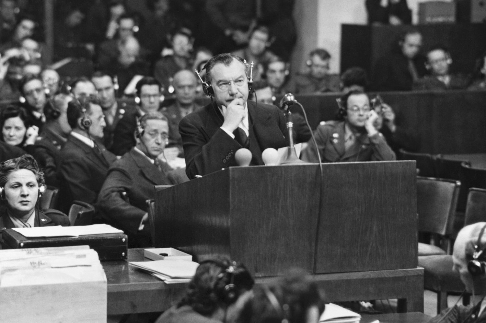
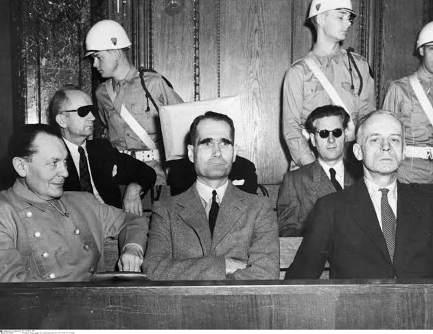
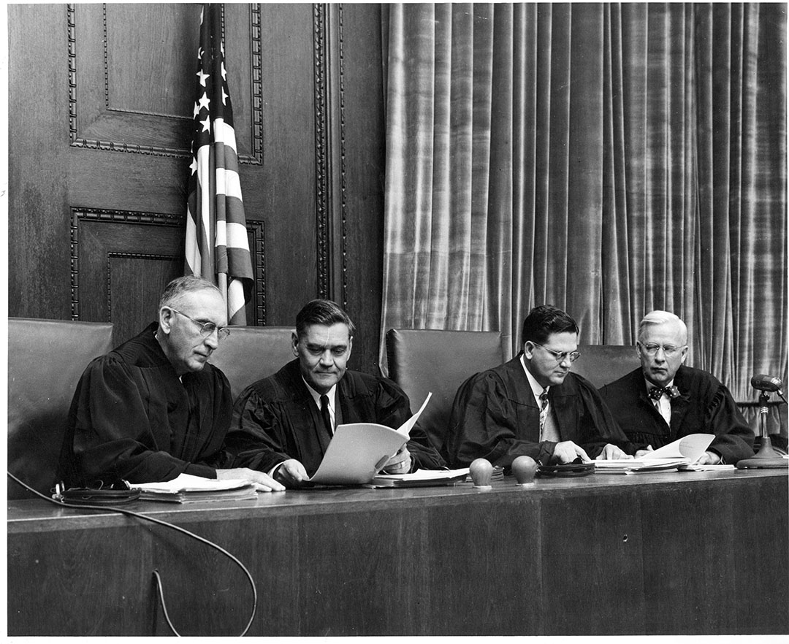

The Nuremberg Trials: Postwar Accountability and International Law
Held in Nuremberg, Germany, beginning in late 1945, the Nuremberg trials prosecuted surviving Nazi leaders and established enduring precedents in international criminal law and postwar justice.
Origins of the Tribunal and Legal Framework

Even before fighting ended in Europe, Allied leaders debated how to hold senior Axis officials accountable for aggressive war, wartime atrocities, and systematic persecution without resorting to arbitrary summary executions. Declarations issued during the war signaled that major offenders would face formal judicial proceedings.
In August 1945, representatives of the United States, the United Kingdom, the Soviet Union, and France signed the London Charter, creating the International Military Tribunal (IMT) and defining the legal charges that would govern the proceedings.
The charter outlined three core categories of offenses: crimes against peace (planning, initiating, or waging a war of aggression), war crimes (violations of the laws and customs of war), and crimes against humanity (murder, extermination, enslavement, deportation, and persecution of civilian populations).
Nuremberg was selected as the venue because its Palace of Justice had suffered limited bomb damage compared with other major German cities, had an adjacent prison complex, and carried symbolic weight as a site closely tied to Nazi propaganda rallies and anti-Jewish laws.
Prosecutors and judges from the four Allied powers worked together under common procedural rules, while German defendants were represented by defense counsel who could call witnesses, cross-examine testimony, and present legal arguments.
Rather than relying solely on oral recollection, prosecutors assembled vast documentary records—captured German ministry files, military orders, maps, and organizational charts—to reconstruct how state institutions carried out wartime policies.
The Main Trial, Evidence, and Key Defendants

The main IMT trial opened in November 1945 against twenty-four high-ranking defendants—including military commanders, party officials, diplomats, and economic administrators—though one died before proceedings began, one was tried in absentia, and another was ruled medically unfit to stand trial.
Over more than three hundred court sessions stretching into October 1946, the prosecution presented extensive documentary evidence alongside witness testimony and filmed material documenting the scale of camp atrocities and forced labor.
Defendants offered varied lines of defense. Some claimed ignorance of crimes committed outside their immediate sphere of responsibility, while others argued they were following lawful orders or acting within sovereign state policy.
The tribunal rejected the argument that superior orders automatically absolved individuals of responsibility for clear violations of international law, emphasizing personal accountability when choices were available.
Alongside individual defendants, prosecutors sought to declare specific Nazi organizations—such as the SS, the Gestapo, and the leadership corps of the Nazi Party—criminal organizations, a step intended to aid subsequent prosecutions without retrying every member from scratch.
Simultaneous interpretation in English, French, Russian, and German allowed judges, lawyers, defendants, and journalists from around the world to follow testimony in real time, a technical innovation that became a model for later international courts.
Verdicts, Subsequent Trials, and Lasting Legacy

On September 30 and October 1, 1946, the tribunal delivered its verdicts: twelve defendants were sentenced to death, three received life imprisonment, four received prison terms ranging from ten to twenty years, and three were acquitted.
The main IMT trial was followed by twelve subsequent Nuremberg trials conducted by U.S. authorities between 1946 and 1949, prosecuting doctors, judges, industrialists, SS officers, and ministry officials to address broader tiers of complicity across German society.
Critics and legal scholars pointed out real tensions in the proceedings, including concerns over retroactive application of certain legal concepts and the absence of Allied war crimes from the tribunal's docket.
Nevertheless, the Nuremberg principles helped shape the United Nations Genocide Convention, the Universal Declaration of Human Rights, and later international tribunals addressing conflicts in the former Yugoslavia, Rwanda, and beyond.
By anchoring individual responsibility in written international law and preserving an extensive public archive of official documents, Nuremberg set a lasting benchmark for how societies confront state-sponsored atrocities after war.
Preparing the prosecution case required sorting through mountains of captured German records, including cabinet minutes, military directives, correspondence, and administrative reports. Legal teams organized these documents to show how policy decisions moved from senior leadership down through ministries, police agencies, and military commands.
Inside the courtroom, daily proceedings moved through structured phases of opening statements, documentary presentation, witness examination, and closing arguments. Observers and correspondents watched how written records often contradicted defendants' claims of limited knowledge or purely routine administrative duties.
Questions of legal authority and state sovereignty drew close scrutiny throughout the trial. Judges weighed arguments over treaty obligations, customary rules of warfare, and individual moral choice when officials carried out state policies that harmed civilians and prisoners of war.
Beyond the main courtroom, the subsequent trials in Nuremberg examined specialized sectors of the regime—including medical experimentation, judicial administration, SS camp and mobile operations, economic enterprises, and government ministries—broadening the documented record of wartime abuses.
Over the decades that followed, the legal precedents and archival collections from Nuremberg continued to inform international criminal law, human rights standards, and historical research into how state machinery operates during total war.
Cooperation among the four Allied prosecution teams required bridging very different legal traditions. American and British lawyers came from common-law systems emphasizing cross-examination and precedent, while Soviet and French jurists worked within continental civil-law frameworks that relied heavily on written dossiers and judicial inquiry. Negotiating shared courtroom procedures took months of careful diplomatic and legal preparation before the first indictment was read in open court.
Defense attorneys faced daunting logistical hurdles as they prepared cases in a devastated postwar city. Many German archives had been scattered, damaged, or seized by Allied forces, requiring defense teams to request access to captured files and locate witnesses across occupied zones. Despite these constraints, the tribunal granted defense counsel time to review translated documents, call witnesses, and challenge prosecution interpretations of specific orders and administrative chains of command.
International journalists, legal observers, and visiting officials packed the courtroom gallery throughout the proceedings, carrying daily reports of the evidence to audiences worldwide. By placing official German memoranda, transport schedules, and diplomatic cables into the public record, the tribunal ensured that contemporary readers and future historians could examine primary documentation directly rather than relying solely on postwar memoirs or political summaries.
In the decades following the verdicts, the Nuremberg Principles adopted by the United Nations codified key takeaways from the proceedings: holding a head of state or senior official position does not shield an individual from accountability under international law, and following superior orders does not excuse criminal acts when a moral choice was possible. Those standards continue to anchor modern international justice and military law curricula around the world.
Organizing the courtroom itself required substantial reconstruction and technical planning. Engineers repaired the Palace of Justice courtroom, installed lighting for newsreel cameras and photographers, and built an electronic translation system so participants and observers could switch between four languages without slowing testimony or cross-examination.
Taken as a whole, the Nuremberg proceedings combined judicial procedure with historical documentation on an unprecedented scale. By testing claims against surviving official records and sworn testimony, the tribunal established an enduring legal reference point for holding senior officials accountable after aggressive war and state-sponsored atrocities.
By insisting on documentary proof, open courtroom procedure, and defined categories of international crimes, Nuremberg turned postwar accountability into a lasting benchmark for diplomacy, military conduct, and international law.
Public access and press coverage also shaped how the proceedings were received across Europe. Correspondents filed daily dispatches describing courtroom arguments, document presentations, and the reactions of defendants and judges, bringing detailed accounts of the trial into homes and newspapers far beyond Germany.
At the same time, legal scholars and historians continued to debate questions of jurisdiction, selectivity, and precedent long after the verdicts were read. Even amid those ongoing discussions, Nuremberg established a lasting framework for individual accountability under international law when state leaders commit aggressive war or crimes against humanity.